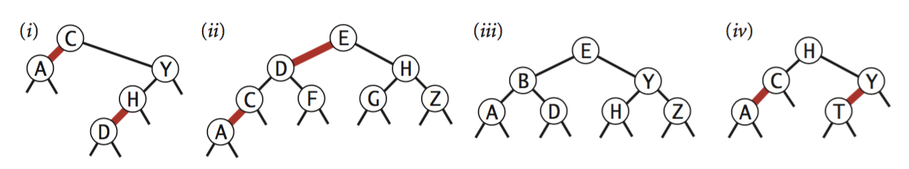

Exercises A¶
Note
You must complete these exercises by Wednesday of W6.
Exercise 3.1.1¶
Which of the two SequentialSearchST or BinarySearchST implementations would you use for an application?
which performs \(10^3\) put() and \(10^6\) get() in random order? Justify.
Exercise 3.1.2 (Inginious)¶
Implement the ceil method method of BinarySearchST.
Implement the floor() method of BinarySearchST.
Exercise 3.1.3¶
Exercise 3.1.24 of the book.
Assuming the keys are doubles or integers. Write a version of binary search that assumes a uniform distribution of keys and will thus first look at the beginning of a dictionary for a word that begins with a letter close to the beginning of the alphabet.
More exactly, if the searched key is \(k_x\), the smallest key is \(k_{lo}\) and the largest is \(k_{hi}\), the interpolation-search will first test at the key at percentile \(\lfloor(k_x-k_{lo})/(k_{hi}-k_{lo}) \rfloor * 100\) of the array and not in the middle (50 percentile) of the table first.
Implement InterpolationSearchST and compare this on FrequencyCounter.
Exercise 3.1.4¶
Exercise 3.1.25 of the book.
It is very common to first test the presence of a key before adding or modifying the corresponding entry. That successively generates several consecutive searches for the same key.
The idea of caching is to memorize internally the last accessed key
and to use it opportunistically if it is still valid.
Modify BinarySearchST to incorporate this idea.
Exercise 3.1.5¶
Exercise 3.2.31 of the book.
Write a method isBST() method that takes a Node as an argument and returns true if the argument is the root of a BST, false otherwise (so check that the properties of a BST are satisfied).
Do you think that testing (locally) for each node the property « the left child has a lower key and the right child an upper key » is sufficient? If not, give a counterexample.
How complex is your algorithm?
Exercise 3.1.6¶
Exercise 3.2.4 of the book.
Suppose a certain search tree has keys between 1 and 10 and we are looking for key 5. Which sequence(s) cannot match the sequence of the examined keys?
10,9,8,7,6,5
4,10,8,6,5
1,10,2,9,3,8,4,7,6,5
2,7,3,8,4,5
1,2,10,4,8,5
Exercics 3.1.7¶
Exercise 3.3.33 of the book.
Write an method is23() in RedBlackBST that checks that no nodes are connected
to two red links and that there is no red link to the right.
Also write an method isBalanced() that checks that any path from the root to a null link has the
same number of black links. Finally combine isBST(),is23() and isBalanced() to implement isRedBlackBST().
Exercise 3.1.8¶
How to enumerate all memorized keys in ascending order in a binary search tree? What is the time complexity of this operation ? Justify your answer.
Exercise 3.1.9¶
Starting from an initially empty binary search tree, how does the tree look like after inserting the keys 12, 5, 10, 3, 13, 14, 15, 17, 18, 15? For the same data how would the tree look like for a 2-3 tree?
Does this example illustrate the advantages or disadvantages of these different data structures? Why ?
Exercise 3.1.10¶
Which of these trees is (are) red-black? For each, draw the correspondence to a 2-3 tree (described p432).
